← 返回阅读库 · 原论文目录
论文讲解阅读文档 · 生成对抗网络GAN · v143
CycleGAN照片转梵高莫奈油画
视频时长 00:29:58；讲解文字 9,227 字符；提取讲解画面 465 张。按视频原顺序阅读，每段文字保留时间戳。
文字来自整段视频的自动语音转写，按自然停顿分段，并与 PPT / 论文页面 / 演示画面对齐。未将讲解压缩为摘要；术语、数字和口述公式请结合画面及原论文核对。 阅读稿已校正规范部分明确术语误识别；原始逐字稿和每处修改记录另行保留。
讲解画面为源视频截图（640×360），不是可编辑 PPT 文件。全片按每秒 2 帧扫描内容变化，逐步展开页保留；连续动画保留代表画面。清晰度受源视频限制。
下载完整资料包 · 含离线 HTML、PDF、Word、全部 PPT 画面和字幕。
原论文与材料
Unpaired Image-to-Image Translation using Cycle-Consistent Adversarial Networks · 下载完整 PDF（18 页）
按时间阅读
00:00:00–00:00:07 · 画面 001
00:00:00–00:00:07 · 画面 001大家好，我是同济子豪兄，欢迎来到编程奇妙夜。今天带大家玩一个特别有趣的人工智能风格迁移案例。
00:00:07–00:00:16 · 画面 002
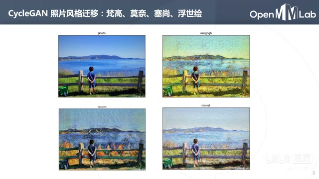
00:00:07–00:00:16 · 画面 002可以把手机照片转成梵高、莫奈、塞尚、浮世绘等等不同的大师画作的风格。上一期视频我们讲了它背后的算法原理，图像生成人工智能算法 CycleGAN，这也是很多短视频和美图 APP 滤镜背后的算法。今天我就手把手带大家用我们 OpenMMLab 开源图像生成算法库 MMGeneration。
00:00:16–00:00:26 · 画面 003
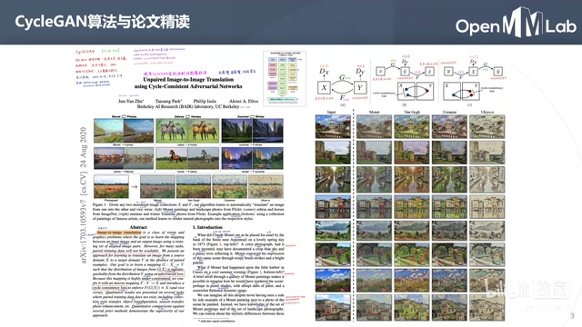
00:00:16–00:00:26 · 画面 00300:00:26–00:01:12 · 画面 004
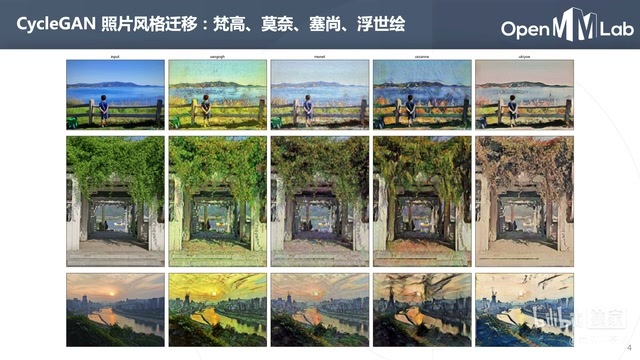
00:00:26–00:01:12 · 画面 004动手自己实现一个 cycle gun，在自己的数据集上训练自己的 cycle gun。这是最后的效果，输入一张手机拍的风景照，它就可以转成梵高、莫奈、塞尚、福士会等等不同的风格。这几张照片都是我自己用手机拍的，你也可以换成你自己的照片，换成你自己的数据集来训练你自己的 cycle gun。那我们每一期编程奇妙夜都是有数据集、有代码实战、有论文精读和算法精讲，还有趣味好玩的应用。如果你正好还是艺术专业的同学，那这个案例足够做一个本科毕业设计了。这是我在同济大学拍的一些照片转出来效果都非常的惊艳，甚至你可以对视频逐帧的运行 cycle gun，可以生成一个视频风格迁移的效果。
00:01:12–00:01:19 · 画面 005
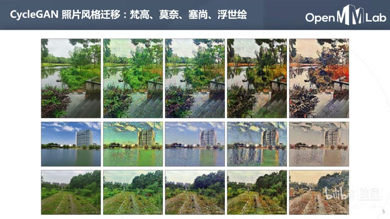
00:01:12–00:01:19 · 画面 00500:01:19–00:01:23 · 画面 006
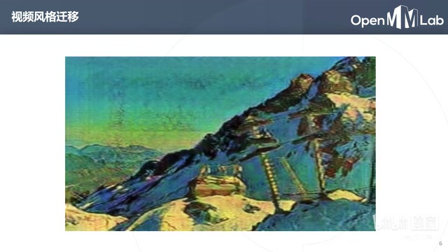
00:01:19–00:01:23 · 画面 00600:01:23–00:01:27 · 画面 007
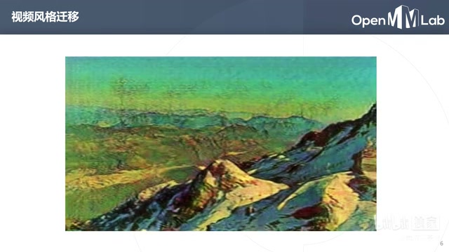
00:01:23–00:01:27 · 画面 00700:01:27–00:01:36 · 画面 008
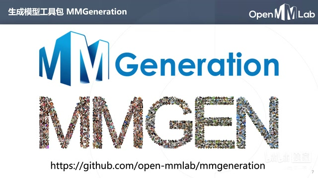
00:01:27–00:01:36 · 画面 008现在来介绍一下 OpenMMLab 开源图像生成算法库 MMGeneration，它所有的代码都是开源的，可以在 Github 上看到链接，如图所示。如果你觉得它还不错，可以右上角点一个 starstar 越多我们录制后续教程的可能性就更高。如果你遇到了 bug 或者你有什么改进它的想法，可以提 issue 和 pr。
00:01:36–00:01:54 · 画面 009
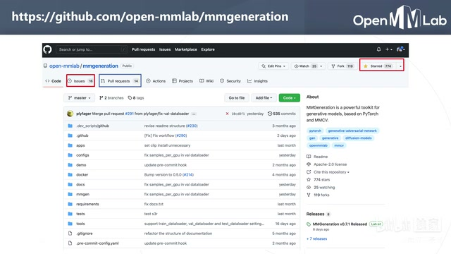
00:01:36–00:01:54 · 画面 00900:01:54–00:01:58 · 画面 010
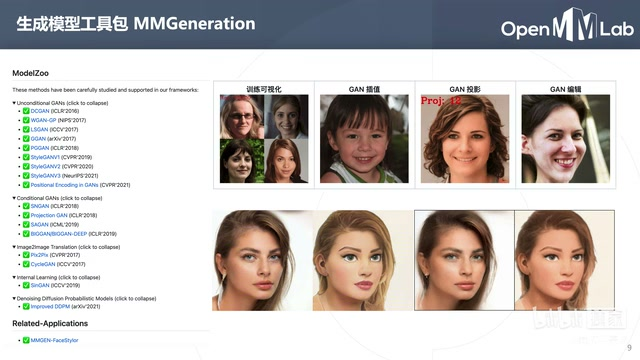
00:01:54–00:01:58 · 画面 010MM Generation 内置了一些常用的经典的前沿的生成对抗网络的算法，包含了非条件 GAN、条件 GANImage Translation 图像转译等等不同的领域。
00:01:58–00:02:02 · 画面 011
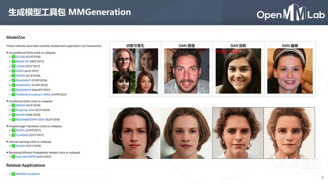
00:01:58–00:02:02 · 画面 01100:02:02–00:02:06 · 画面 012
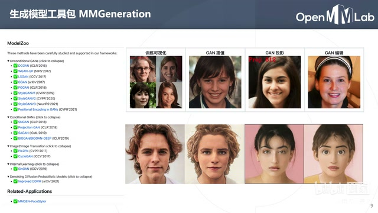
00:02:02–00:02:06 · 画面 01200:02:06–00:02:09 · 画面 013
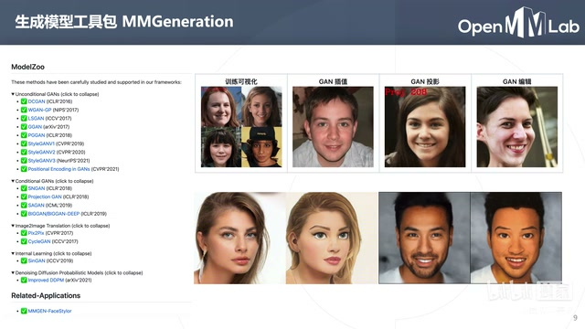
00:02:06–00:02:09 · 画面 01300:02:09–00:02:13 · 画面 014
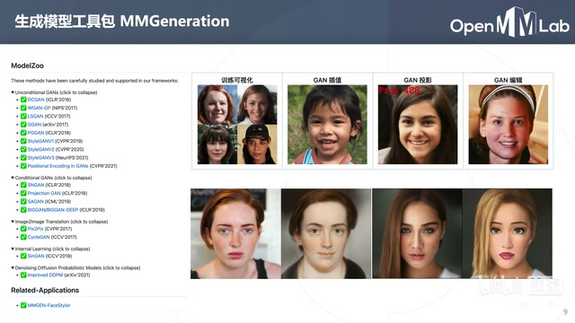
00:02:09–00:02:13 · 画面 014OpenMMLab 整个这个算法体系的好处就在于我们的算法研究员已经帮你复现了这些代码了，而且这些算法都是最前沿最经典必学必用的，你就不需要再去看论文再去写代码调参炼丹了，可以直接用我们训练好的模型权重文件，既可以进行预测也可以拿来训练你自己的数据集。
00:02:13–00:02:17 · 画面 015
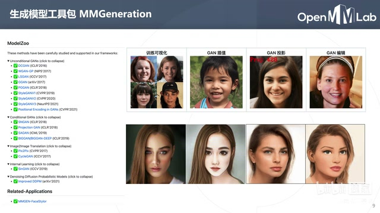
00:02:13–00:02:17 · 画面 01500:02:17–00:02:21 · 画面 016
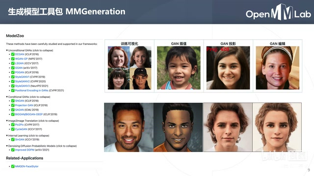
00:02:17–00:02:21 · 画面 01600:02:21–00:02:25 · 画面 017
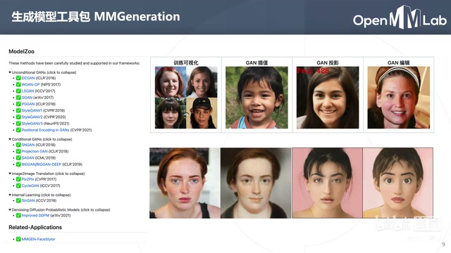
00:02:21–00:02:25 · 画面 01700:02:25–00:02:28 · 画面 018
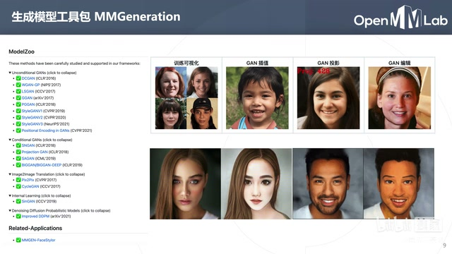
00:02:25–00:02:28 · 画面 01800:02:28–00:02:32 · 画面 019
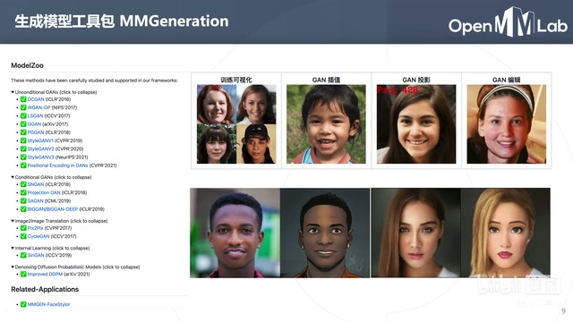
00:02:28–00:02:32 · 画面 01900:02:32–00:02:36 · 画面 020
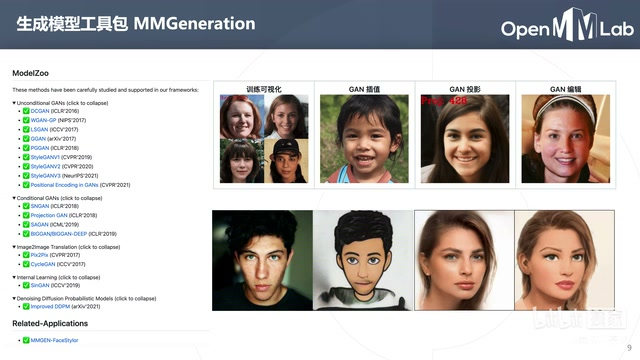
00:02:32–00:02:36 · 画面 020如果你要写论文的话要比较不同算法的优劣，不同算法的跑分，那么你就不需要一个一个再去重复去实现了，直接用我们的 OpenMMLab 一站式就可以把所有的算法的跑分跑出来写在你的论文里。那 MM Generation 呢，我写了一个一整套的代码教程，那么今天呢我们主要讲红框里边的 CycleGAN 这几讲。
00:02:36–00:02:40 · 画面 021
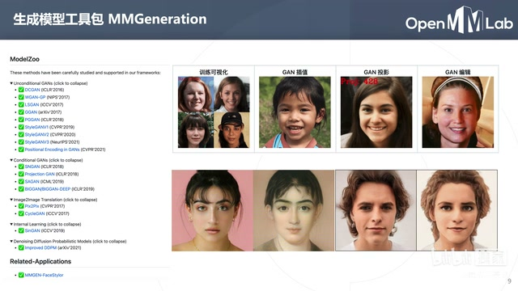
00:02:36–00:02:40 · 画面 02100:02:40–00:02:41 · 画面 022
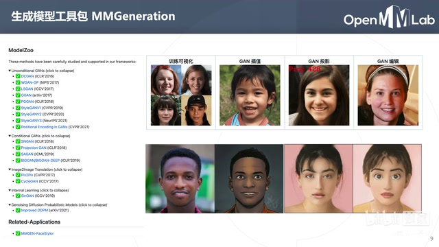
00:02:40–00:02:41 · 画面 02200:02:41–00:02:45 · 画面 023
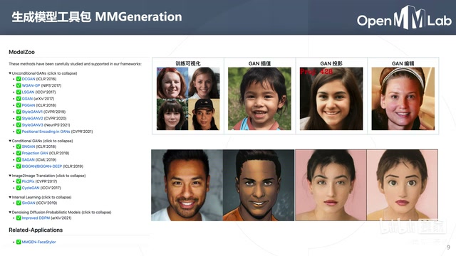
00:02:41–00:02:45 · 画面 02300:02:45–00:02:49 · 画面 024
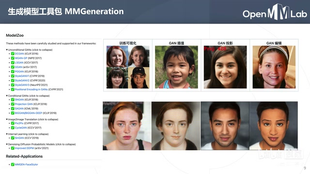
00:02:45–00:02:49 · 画面 02400:02:49–00:02:51 · 画面 025
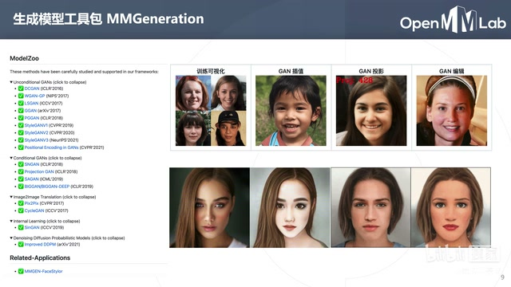
00:02:49–00:02:51 · 画面 02500:02:51–00:03:17 · 画面 026
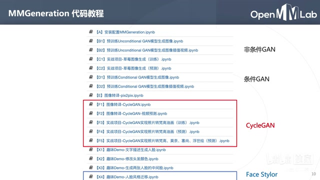
00:02:51–00:03:17 · 画面 026除此之外，mmgeneration 还有非条件 GAN、条件 GAN 还有趣味案例以及 face styler 人脸风格迁移这几个代码，人脸风格迁移的视频已经发布了。现在我们讲的是 cyclegan，在下一期视频我会把剩下的代码讲完。
00:03:17–00:03:28 · 画面 027
00:03:17–00:03:28 · 画面 027那如何获取这些代码教程呢，可以扫描公众号回复 mmgeneration，注意是两个 m 就可以获取我刚刚写的这一整套的代码教程了，并且可以加入 mmgeneration 的答疑社群，里面有很多的大佬，如果你对生成对抗网络有任何的问题，代码的算法的学术上的论文方面的都可以提问。
00:03:28–00:03:30 · 画面 028
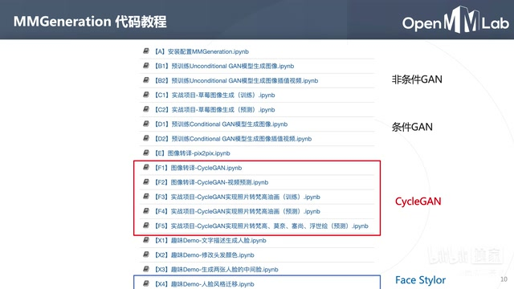
00:03:28–00:03:30 · 画面 02800:03:30–00:03:49 · 画面 029
00:03:30–00:03:49 · 画面 029最后还是欢迎大家给我们的算法库多提建议，多点 start，提 PR 和 issue。现在来写代码，用 JupyterLab 或者 JupyterNotebook 打开这一整套的代码教程，从 A 到 Z 依次运行即可。今天我们其实只需要运行 F 开头的这五个代码，运行所有代码之前都要先运行 A 代码，安装配置安装我们 OpenMMLab 的算法库。
00:03:49–00:04:07 · 画面 030
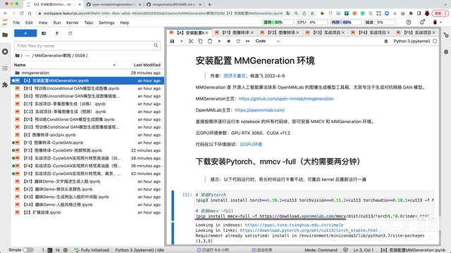
00:03:49–00:04:07 · 画面 03000:04:07–00:04:08 · 画面 031
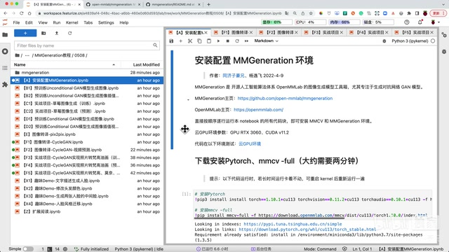
00:04:07–00:04:08 · 画面 03100:04:08–00:04:17 · 画面 032
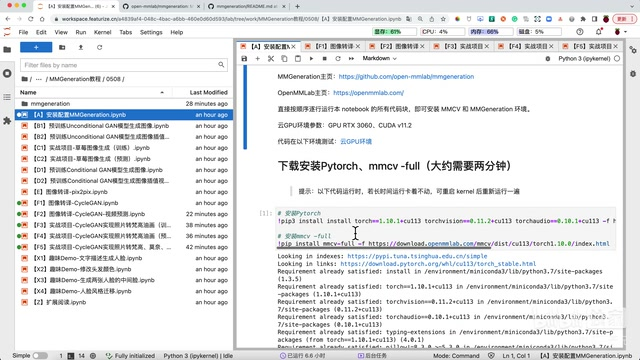
00:04:08–00:04:17 · 画面 032首先需要安装 PyTorch，然后安装 MMCV-这一步大概需要两分钟。如果你运行这一步一直没有运行完毕，一直卡着不动，可以重启这个 Kernel，点击这里重启，然后重新运行这个代码块就可以了。接下来是安装其他的工具包，包括一些进度条的库、图像和视频处理的库、画图的库还有 OpenCV，这一步大概需要一分钟。
00:04:17–00:04:18 · 画面 033
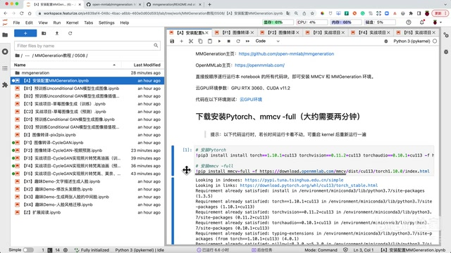
00:04:17–00:04:18 · 画面 03300:04:18–00:04:22 · 画面 034
00:04:18–00:04:22 · 画面 03400:04:22–00:04:23 · 画面 035
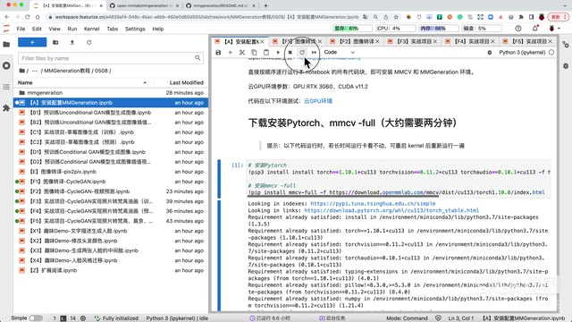
00:04:22–00:04:23 · 画面 03500:04:23–00:04:25 · 画面 036
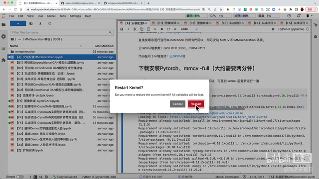
00:04:23–00:04:25 · 画面 03600:04:25–00:04:27 · 画面 037
00:04:25–00:04:27 · 画面 03700:04:27–00:04:29 · 画面 038
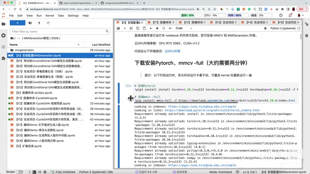
00:04:27–00:04:29 · 画面 03800:04:29–00:04:30 · 画面 039
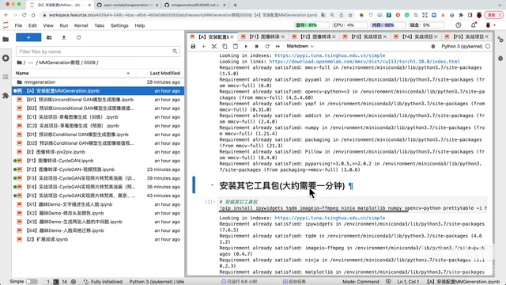
00:04:29–00:04:30 · 画面 03900:04:30–00:04:37 · 画面 040
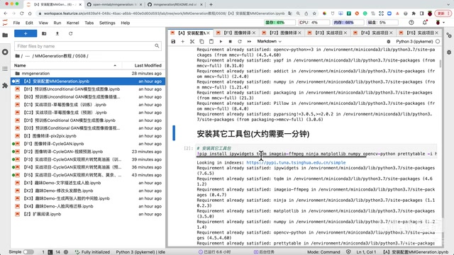
00:04:30–00:04:37 · 画面 04000:04:37–00:04:38 · 画面 041
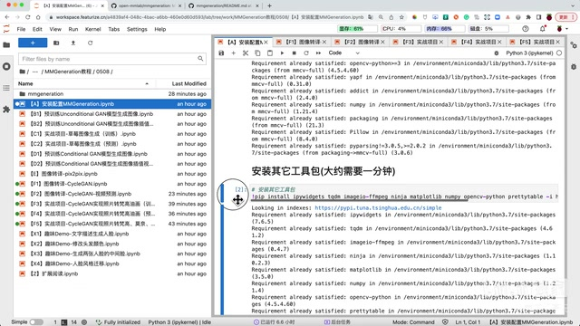
00:04:37–00:04:38 · 画面 04100:04:38–00:04:41 · 画面 042
00:04:38–00:04:41 · 画面 042速度很快，因为我已经把开源镜像站换到了清华大学开源软件镜像站，速度很快。接下来是删掉原有的这个 mmgeneration 文件夹，如果有的话，然后从 GitHub 上下载一个最新版本的 mmgeneration，那就会生成一个这样的文件夹，进入这个文件夹来安装。那这一步呢时间也比较久，大概需要两分钟之后呢要创建一些文件夹。
00:04:41–00:04:47 · 画面 043
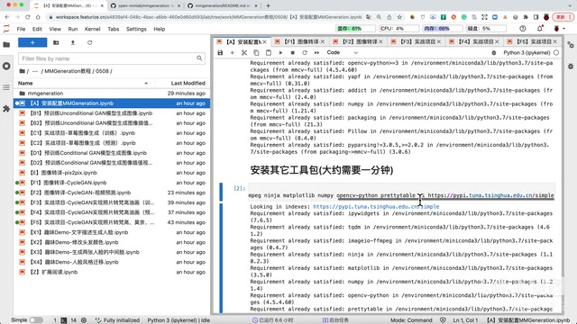
00:04:41–00:04:47 · 画面 04300:04:47–00:04:49 · 画面 044
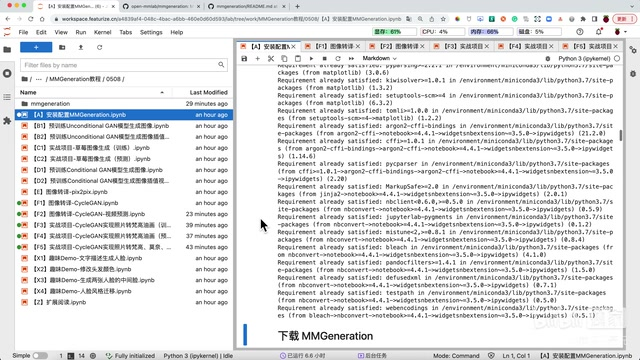
00:04:47–00:04:49 · 画面 04400:04:49–00:05:00 · 画面 045
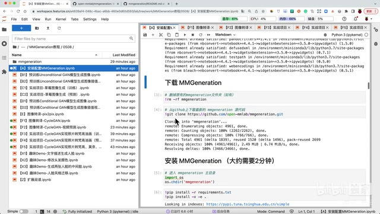
00:04:49–00:05:00 · 画面 04500:05:00–00:05:01 · 画面 046
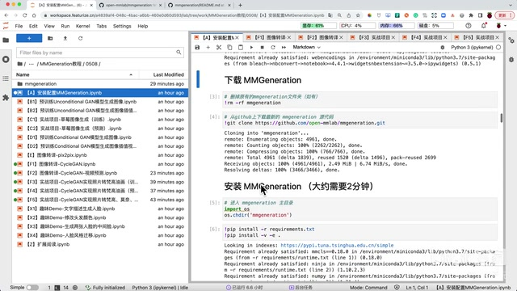
00:05:00–00:05:01 · 画面 04600:05:01–00:05:03 · 画面 047
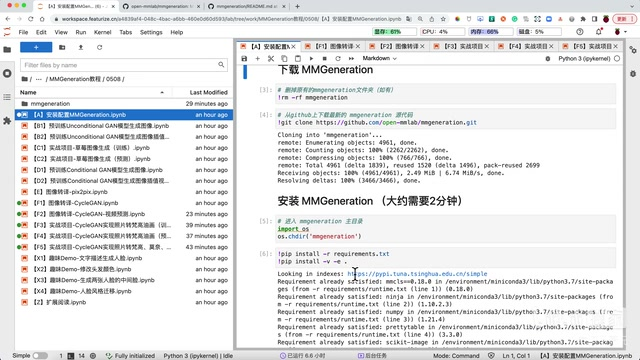
00:05:01–00:05:03 · 画面 04700:05:03–00:05:04 · 画面 048
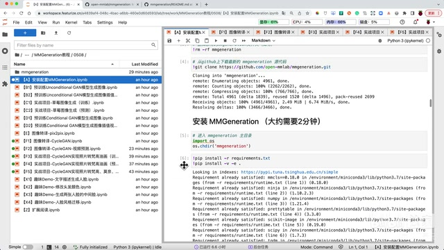
00:05:03–00:05:04 · 画面 04800:05:04–00:05:08 · 画面 049
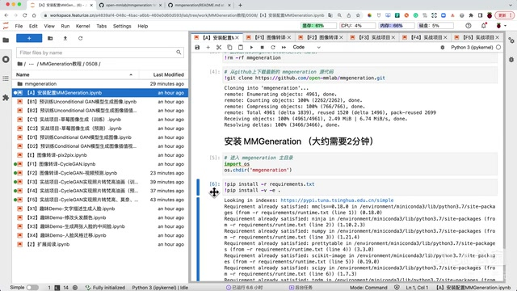
00:05:04–00:05:08 · 画面 04900:05:08–00:05:10 · 画面 050
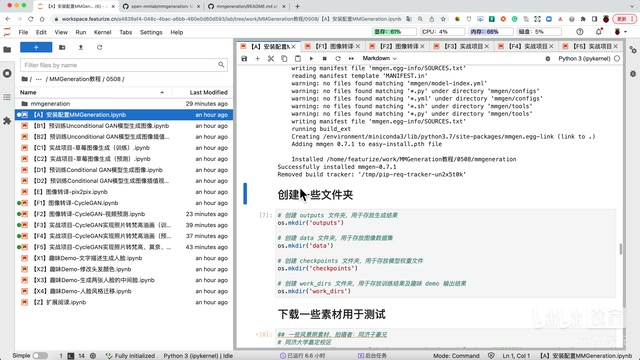
00:05:08–00:05:10 · 画面 05000:05:10–00:05:21 · 画面 051
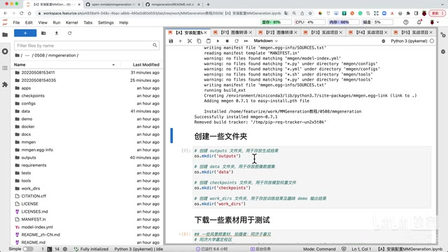
00:05:10–00:05:21 · 画面 051Outputs 文件夹用于存放生成结果，Data 文件夹用于存放数据集，Checkpoints 文件夹用于存放模型权重文件。然后 Work Directories 文件夹用来存放训练的结果。接下来是一些素材，用于测试这些图片和视频，有一些是我亲自拍的，有一些是从免费图像网站上获得到的。
00:05:21–00:05:22 · 画面 052
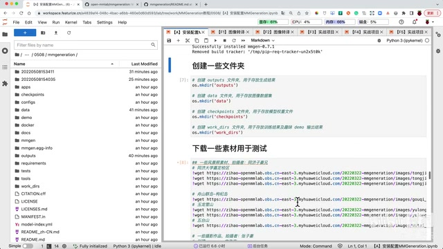
00:05:21–00:05:22 · 画面 05200:05:22–00:05:24 · 画面 053
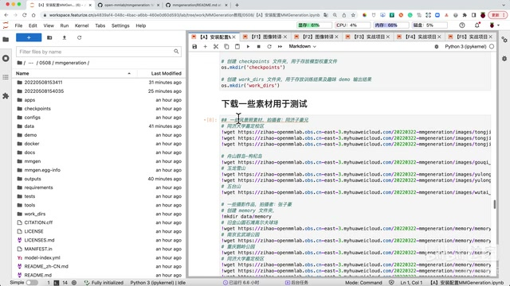
00:05:22–00:05:24 · 画面 05300:05:24–00:05:25 · 画面 054
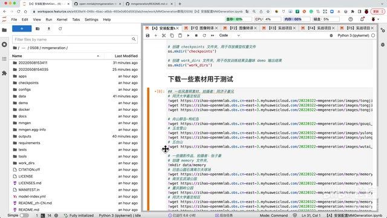
00:05:24–00:05:25 · 画面 05400:05:25–00:05:31 · 画面 055
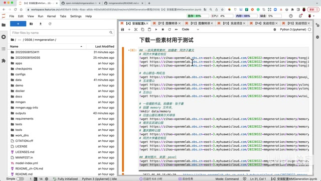
00:05:25–00:05:31 · 画面 05500:05:31–00:05:35 · 画面 056
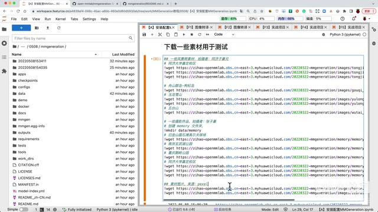
00:05:31–00:05:35 · 画面 05600:05:35–00:05:39 · 画面 057
00:05:35–00:05:39 · 画面 057一会我们都会看到用它们来做风格迁移的效果。最后是检查是否安装成功，如果这三个代码块都可以顺利的运行，直接点住它 shift 加回车就可以运行了。如果没有报错能够顺利运行，最后它生成的结果是一个 43256256 的一个张量，那就证明你的 MMM generation
00:05:39–00:05:40 · 画面 058
00:05:39–00:05:40 · 画面 05800:05:40–00:05:44 · 画面 059
00:05:40–00:05:44 · 画面 05900:05:44–00:05:47 · 画面 060
00:05:44–00:05:47 · 画面 06000:05:47–00:05:50 · 画面 061
00:05:47–00:05:50 · 画面 06100:05:50–00:05:54 · 画面 062
00:05:50–00:05:54 · 画面 06200:05:54–00:05:55 · 画面 063
00:05:54–00:05:55 · 画面 06300:05:55–00:06:00 · 画面 064
00:05:55–00:06:00 · 画面 06400:06:00–00:06:01 · 画面 065
00:06:00–00:06:01 · 画面 06500:06:01–00:06:03 · 画面 066
00:06:01–00:06:03 · 画面 066安装成功了，就可以开启后面的代码了。那我们来看 F1 代码。
00:06:03–00:06:07 · 画面 067
00:06:03–00:06:07 · 画面 06700:06:07–00:06:08 · 画面 068
00:06:07–00:06:08 · 画面 06800:06:08–00:06:15 · 画面 069
00:06:08–00:06:15 · 画面 069F1 代码是调用 MM Generation 预训练好的 CycleGAN 模型来执行预测。可以先看一下我做的 CycleGAN 的论文精读视频，以及 MM Generation Model Zoo 的 CycleGAN 的主页面，你会发现 MM Generation 提供了很多 CycleGAN 的预训练模型，有这个建筑外立面图转成设计语义图的，还有冬天转夏天的，斑马转野马的这些。
00:06:15–00:06:17 · 画面 070
00:06:15–00:06:17 · 画面 07000:06:17–00:06:18 · 画面 071
00:06:17–00:06:18 · 画面 07100:06:18–00:06:20 · 画面 072
00:06:18–00:06:20 · 画面 07200:06:20–00:06:24 · 画面 073
00:06:20–00:06:24 · 画面 07300:06:24–00:06:25 · 画面 074
00:06:24–00:06:25 · 画面 07400:06:25–00:06:29 · 画面 075
00:06:25–00:06:29 · 画面 07500:06:29–00:06:30 · 画面 076
00:06:29–00:06:30 · 画面 07600:06:30–00:06:31 · 画面 077
00:06:30–00:06:31 · 画面 07700:06:31–00:06:37 · 画面 078
00:06:31–00:06:37 · 画面 07800:06:37–00:06:39 · 画面 079
00:06:37–00:06:39 · 画面 079赛科干论文里面提到的都有，但是呢没有我们今天要实现的默奈转照片，照片转默奈这个模型是没有的，所以我们一会儿要自己去训练一个。好，回到 FE 代码，首先进入 MMGeneration 的主目录，那就进入到这个目录，然后导入一些工具包，在 MMGeneration 里边调用预训练模型有两种方式，你可以用命令行方式调用。
00:06:39–00:06:51 · 画面 080
00:06:39–00:06:51 · 画面 08000:06:51–00:06:52 · 画面 081
00:06:51–00:06:52 · 画面 08100:06:52–00:06:53 · 画面 082
00:06:52–00:06:53 · 画面 08200:06:53–00:06:57 · 画面 083
00:06:53–00:06:57 · 画面 08300:06:57–00:06:59 · 画面 084
00:06:57–00:06:59 · 画面 08400:06:59–00:07:02 · 画面 085
00:06:59–00:07:02 · 画面 08500:07:02–00:07:07 · 画面 086
00:07:02–00:07:07 · 画面 08600:07:07–00:07:11 · 画面 087
00:07:07–00:07:11 · 画面 087也可以用 Python API 方式来调用。如果用命令行方式调用的话，就直接运行 demo 目录下的 translation_demo.py 脚本，比如说我来指定一个 CycleGAN 的 config 模型配置文件，再指定一个 CycleGAN 的 checkpoint 的模型权重文件，输入一张照片，然后指定要把它转成冬天。
00:07:11–00:07:15 · 画面 088
00:07:11–00:07:15 · 画面 08800:07:15–00:07:16 · 画面 089
00:07:15–00:07:16 · 画面 08900:07:16–00:07:20 · 画面 090
00:07:16–00:07:20 · 画面 09000:07:20–00:07:24 · 画面 091
00:07:20–00:07:24 · 画面 09100:07:24–00:07:25 · 画面 092
00:07:24–00:07:25 · 画面 09200:07:25–00:07:28 · 画面 093
00:07:25–00:07:28 · 画面 09300:07:28–00:07:30 · 画面 094
00:07:28–00:07:30 · 画面 09400:07:30–00:07:37 · 画面 095
00:07:30–00:07:37 · 画面 095因为这个模型就是夏天转冬天的模型，所以我可以在 target domain 里面指定它转成冬天，指定输出图像的保存位置。那么运行一下，在这个目录下就会，这是原图，这是生成的图，这是一张夏天拍的图片，那么它就转成了冬天的图片。
00:07:37–00:07:38 · 画面 096
00:07:37–00:07:38 · 画面 09600:07:38–00:07:40 · 画面 097
00:07:38–00:07:40 · 画面 09700:07:40–00:07:42 · 画面 098
00:07:40–00:07:42 · 画面 09800:07:42–00:07:44 · 画面 099
00:07:42–00:07:44 · 画面 09900:07:44–00:07:47 · 画面 100
00:07:44–00:07:47 · 画面 10000:07:47–00:07:52 · 画面 101
00:07:47–00:07:52 · 画面 10100:07:52–00:07:54 · 画面 102
00:07:52–00:07:54 · 画面 102但是这里边有个问题，就是用命令行方式运行得到的图片是一个正方形的图片，和原图大小不一样，这个正方形的大小是 256x256。那我也可以冬天转夏天运行一个命令行。
00:07:54–00:07:57 · 画面 103
00:07:54–00:07:57 · 画面 10300:07:57–00:08:03 · 画面 104
00:07:57–00:08:03 · 画面 10400:08:03–00:08:04 · 画面 105
00:08:03–00:08:04 · 画面 10500:08:04–00:08:05 · 画面 106
00:08:04–00:08:05 · 画面 10600:08:05–00:08:08 · 画面 107
00:08:05–00:08:08 · 画面 107这是我在玉龙雪山拍的一张雪山的照片，那么转成夏天是这个效果，虽然效果还可以，但是它仍然是把这张照片转成了 256x256 的正方形图片，和原始输入的大小并不一致，所以我并不推荐大家使用命令行方式来调用，可以用 Python API 方式来调用。首先导入一堆工具包，我写了一个函数，这个函数核心是用 sample_img2img_model
00:08:08–00:08:12 · 画面 108
00:08:08–00:08:12 · 画面 10800:08:12–00:08:23 · 画面 109
00:08:12–00:08:23 · 画面 10900:08:23–00:08:25 · 画面 110
00:08:23–00:08:25 · 画面 11000:08:25–00:08:28 · 画面 111
00:08:25–00:08:28 · 画面 11100:08:28–00:08:39 · 画面 112
00:08:28–00:08:39 · 画面 112的函数来实现图像的转换，然后再把图像 resize 这个重新缩放到原图尺寸的大小，那么它就可以使得我生成的图片和原图的大小是一样的。那我这里导入模型，指定 config 配置文件和
00:08:39–00:08:41 · 画面 113
00:08:39–00:08:41 · 画面 11300:08:41–00:08:45 · 画面 114
00:08:41–00:08:45 · 画面 11400:08:45–00:08:48 · 画面 115
00:08:45–00:08:48 · 画面 11500:08:48–00:08:50 · 画面 116
00:08:48–00:08:50 · 画面 11600:08:50–00:08:52 · 画面 117
00:08:50–00:08:52 · 画面 11700:08:52–00:08:59 · 画面 118
00:08:52–00:08:59 · 画面 118checkpoint 的权重文件，初始化这个模型，就直接调用我刚刚写好的这个函数就可以了，input path 写输入图像的路径，output path 指定保存图像的路径，target domain 表示你要把图像转到什么域，fig size 是图像的大小。那现在它就可以画出这样的效果，这是原图，这是转换之后的图，我可以换一张照片，这是我们同济大学嘉定校区的图书馆，夏天转冬天。
00:08:59–00:09:07 · 画面 119
00:08:59–00:09:07 · 画面 11900:09:07–00:09:10 · 画面 120
00:09:07–00:09:10 · 画面 12000:09:10–00:09:12 · 画面 121
00:09:10–00:09:12 · 画面 12100:09:12–00:09:14 · 画面 122
00:09:12–00:09:14 · 画面 12200:09:14–00:09:15 · 画面 123
00:09:14–00:09:15 · 画面 12300:09:15–00:09:18 · 画面 124
00:09:15–00:09:18 · 画面 12400:09:18–00:09:23 · 画面 125
00:09:18–00:09:23 · 画面 12500:09:23–00:09:24 · 画面 126
00:09:23–00:09:24 · 画面 126这是我在舟山群岛拍的一张照片，也是夏天转冬天，效果还是可以的。那 cycle 干嘛，它是一个 cycle 是一个循环，既可以夏天转冬天，也可以冬天转夏天。那我这里把这个模型导入进来，然后 target domain 这里不是 winter 了，而是要变成 summer，输入一张冬天的图，它能转成夏天的图。
00:09:24–00:09:28 · 画面 127
00:09:24–00:09:28 · 画面 12700:09:28–00:09:30 · 画面 128
00:09:28–00:09:30 · 画面 12800:09:30–00:09:35 · 画面 129
00:09:30–00:09:35 · 画面 12900:09:35–00:09:39 · 画面 130
00:09:35–00:09:39 · 画面 13000:09:39–00:09:42 · 画面 131
00:09:39–00:09:42 · 画面 13100:09:42–00:09:44 · 画面 132
00:09:42–00:09:44 · 画面 13200:09:44–00:09:48 · 画面 133
00:09:44–00:09:48 · 画面 133接下来就可以用官网里面提供的其他的模型了，比如说野马转斑马，他们两个也是可以互转的。导入这个野马转斑马的模型配置文件和模型权重文件，注意这俩文件要对应。输入一张野马的照片，然后 target domain 指定为 zebra 斑马，那么它就会转成斑马了。输入一张斑马的照片，target domain 指定为 horse，那么它就转成野马了。
00:09:48–00:09:51 · 画面 134
00:09:48–00:09:51 · 画面 13400:09:51–00:09:52 · 画面 135
00:09:51–00:09:52 · 画面 13500:09:52–00:09:54 · 画面 136
00:09:52–00:09:54 · 画面 13600:09:54–00:09:56 · 画面 137
00:09:54–00:09:56 · 画面 13700:09:56–00:10:04 · 画面 138
00:09:56–00:10:04 · 画面 13800:10:04–00:10:05 · 画面 139
00:10:04–00:10:05 · 画面 13900:10:05–00:10:10 · 画面 140
00:10:05–00:10:10 · 画面 14000:10:10–00:10:11 · 画面 141
00:10:10–00:10:11 · 画面 14100:10:11–00:10:15 · 画面 142
00:10:11–00:10:15 · 画面 14200:10:15–00:10:16 · 画面 143
00:10:15–00:10:16 · 画面 143效果还是很可以的，这个斑马转野马是 CycleGun 论文里边的一个标志性的成果。那这里我们就用 ImanGeneration 来实现了。那也可以实现建筑的立面设计语义图和立面图的照片互转。那这里要有一些小技巧了，我们从 Test 目录下可以看到。
00:10:16–00:10:21 · 画面 144
00:10:16–00:10:21 · 画面 14400:10:21–00:10:25 · 画面 145
00:10:21–00:10:25 · 画面 14500:10:25–00:10:26 · 画面 146
00:10:25–00:10:26 · 画面 14600:10:26–00:10:30 · 画面 147
00:10:26–00:10:30 · 画面 14700:10:30–00:10:34 · 画面 148
00:10:30–00:10:34 · 画面 14800:10:34–00:10:37 · 画面 149
00:10:34–00:10:37 · 画面 149这个 data paired test 这个 3.gopg 文件那么它是一张图那么这张图分为了左右两部分左边是真实的立面图的照片右边是设计语义图那我就可以用 OpenCV 把它读入进来把左边拆成一张图片右边也拆成一张图片两张图片都是 256x256x3 的正方形图片那我分别把
00:10:37–00:10:38 · 画面 150
00:10:37–00:10:38 · 画面 15000:10:38–00:10:39 · 画面 151
00:10:38–00:10:39 · 画面 15100:10:39–00:10:41 · 画面 152
00:10:39–00:10:41 · 画面 15200:10:41–00:10:50 · 画面 153
00:10:41–00:10:50 · 画面 15300:10:50–00:10:52 · 画面 154
00:10:50–00:10:52 · 画面 15400:10:52–00:10:59 · 画面 155
00:10:52–00:10:59 · 画面 15500:10:59–00:11:01 · 画面 156
00:10:59–00:11:01 · 画面 15600:11:01–00:11:05 · 画面 157
00:11:01–00:11:05 · 画面 157左图就是这个真实照片，让它转成语义图，也可以把右图就是语义图转成真实的立面图。所以在这里就可以实现了。那这些模型呢，都是 MM Generation 的算法研究员已经帮我们复现好的，我们可以拿来直接用，做预测也好，做评估也好。那如何能够训练一个我们自己的 cycle gun 呢？这是我们一会儿要讲的。
00:11:05–00:11:06 · 画面 158
00:11:05–00:11:06 · 画面 15800:11:06–00:11:09 · 画面 159
00:11:06–00:11:09 · 画面 15900:11:09–00:11:10 · 画面 160
00:11:09–00:11:10 · 画面 16000:11:10–00:11:14 · 画面 161
00:11:10–00:11:14 · 画面 16100:11:14–00:11:18 · 画面 162
00:11:14–00:11:18 · 画面 16200:11:18–00:11:20 · 画面 163
00:11:18–00:11:20 · 画面 16300:11:20–00:11:21 · 画面 164
00:11:20–00:11:21 · 画面 16400:11:21–00:11:22 · 画面 165
00:11:21–00:11:22 · 画面 16500:11:22–00:11:24 · 画面 166
00:11:22–00:11:24 · 画面 16600:11:24–00:11:28 · 画面 167
00:11:24–00:11:28 · 画面 16700:11:28–00:11:30 · 画面 168
00:11:28–00:11:30 · 画面 16800:11:30–00:11:34 · 画面 169
00:11:30–00:11:34 · 画面 169除了对单张图像进行预测，还可以对视频进行预测。其实原理非常简单，就是把视频拆成一帧一帧的画面，然后对每一帧画面逐一的运行我们刚刚的这一套方法，然后再把得到的每一个帧的转换之后的画面拼起来，重新拼成一个新视频。首先进入 MMGeneration 主目录，导入工具包，封装一个函数，这个函数和刚刚的效果其实是差不多的。
00:11:34–00:11:35 · 画面 170
00:11:34–00:11:35 · 画面 17000:11:35–00:11:37 · 画面 171
00:11:35–00:11:37 · 画面 17100:11:37–00:11:52 · 画面 172
00:11:37–00:11:52 · 画面 17200:11:52–00:11:53 · 画面 173
00:11:52–00:11:53 · 画面 17300:11:53–00:11:55 · 画面 174
00:11:53–00:11:55 · 画面 17400:11:55–00:11:58 · 画面 175
00:11:55–00:11:58 · 画面 17500:11:58–00:12:01 · 画面 176
00:11:58–00:12:01 · 画面 176导入一个 CycleGAN 的模型，然后生成视频。这个生成视频的原理也很简单，就是用 mmcv 来读取视频，读取画面中的每一帧，对每一帧逐帧运行这个函数，然后把这个每一帧处理之后的画面保存到一个目录，这个目录是文件名是你当前的时间，然后再用 mmcv.framesToVideo 把这个目录里面的每一帧画面再串成一个新视频。
00:12:01–00:12:04 · 画面 177
00:12:01–00:12:04 · 画面 17700:12:04–00:12:28 · 画面 178
00:12:04–00:12:28 · 画面 17800:12:28–00:12:29 · 画面 179
00:12:28–00:12:29 · 画面 179就得到最终的效果了。原理非常简单，你可以自己去试一试，只需要修改这个 input video 输入视频的文件名就可以了。好，这是 F2 代码。那我们再来看 F3 代码，F3 代码呢，就是要用自己的数据集来训练一个自己的 CycleGAN 了。那这里呢，我用的是照片和梵高互转的数据集。那其实在这个 CycleGAN 的官网，它提供了一个。
00:12:29–00:12:33 · 画面 180
00:12:29–00:12:33 · 画面 18000:12:33–00:12:37 · 画面 181
00:12:33–00:12:37 · 画面 18100:12:37–00:12:41 · 画面 182
00:12:37–00:12:41 · 画面 18200:12:41–00:12:45 · 画面 183
00:12:41–00:12:45 · 画面 18300:12:45–00:12:49 · 画面 184
00:12:45–00:12:49 · 画面 18400:12:49–00:12:54 · 画面 185
00:12:49–00:12:54 · 画面 18500:12:54–00:12:55 · 画面 186
00:12:54–00:12:55 · 画面 18600:12:55–00:12:57 · 画面 187
00:12:55–00:12:57 · 画面 18700:12:57–00:12:58 · 画面 188
00:12:57–00:12:58 · 画面 188很多数据集的下载链接。你看有 AE 就是地图转航拍图、Apple to Orange 就是苹果转橘子，然后这是塞尚转照片，然后还有街景的建筑外立面的野马转斑马，然后手机拍的照片转成大光圈的数码单反相机背景虚化前景聚焦的照片。
00:12:58–00:13:00 · 画面 189
00:12:58–00:13:00 · 画面 18900:13:00–00:13:01 · 画面 190
00:13:00–00:13:01 · 画面 19000:13:01–00:13:02 · 画面 191
00:13:01–00:13:02 · 画面 19100:13:02–00:13:04 · 画面 192
00:13:02–00:13:04 · 画面 19200:13:04–00:13:05 · 画面 193
00:13:04–00:13:05 · 画面 19300:13:05–00:13:08 · 画面 194
00:13:05–00:13:08 · 画面 19400:13:08–00:13:10 · 画面 195
00:13:08–00:13:10 · 画面 19500:13:10–00:13:11 · 画面 196
00:13:10–00:13:11 · 画面 19600:13:11–00:13:12 · 画面 197
00:13:11–00:13:12 · 画面 19700:13:12–00:13:15 · 画面 198
00:13:12–00:13:15 · 画面 19800:13:15–00:13:17 · 画面 199
00:13:15–00:13:17 · 画面 19900:13:17–00:13:21 · 画面 200
00:13:17–00:13:21 · 画面 20000:13:21–00:13:22 · 画面 201
00:13:21–00:13:22 · 画面 20100:13:22–00:13:23 · 画面 202
00:13:22–00:13:23 · 画面 202还有像这个图像上色的莫奈转照片、冬天转夏天、浮世绘转照片和梵高转照片。那这些数据集你都可以直接下载。那为了加快大家的下载速度呢，我已经提前帮大家下载好了一些数据集，我放到了我自己的网盘里。那你可以直接运行这个代码块，就把这个梵高数据集下载下来了。
00:13:23–00:13:26 · 画面 203
00:13:23–00:13:26 · 画面 20300:13:26–00:13:30 · 画面 204
00:13:26–00:13:30 · 画面 20400:13:30–00:13:32 · 画面 205
00:13:30–00:13:32 · 画面 20500:13:32–00:13:35 · 画面 206
00:13:32–00:13:35 · 画面 20600:13:35–00:13:41 · 画面 207
00:13:35–00:13:41 · 画面 20700:13:41–00:13:45 · 画面 208
00:13:41–00:13:45 · 画面 20800:13:45–00:13:49 · 画面 209
00:13:45–00:13:49 · 画面 209如果你想训练其他的数据集，可以把这里边的代码解除注释，然后运行就可以了，和官网的数据集是一模一样的。下载下来之后来解压，运行这个代码块来解压。解压之后你就会得到一个这四个文件夹。
00:13:49–00:13:51 · 画面 210
00:13:49–00:13:51 · 画面 21000:13:51–00:13:52 · 画面 211
00:13:51–00:13:52 · 画面 21100:13:52–00:13:53 · 画面 212
00:13:52–00:13:53 · 画面 21200:13:53–00:13:55 · 画面 213
00:13:53–00:13:55 · 画面 21300:13:55–00:13:59 · 画面 214
00:13:55–00:13:59 · 画面 21400:13:59–00:14:01 · 画面 215
00:13:59–00:14:01 · 画面 21500:14:01–00:14:02 · 画面 216
00:14:01–00:14:02 · 画面 21600:14:02–00:14:06 · 画面 217
00:14:02–00:14:06 · 画面 21700:14:06–00:14:07 · 画面 218
00:14:06–00:14:07 · 画面 21800:14:07–00:14:10 · 画面 219
00:14:07–00:14:10 · 画面 219这四个文件夹现在的数据集文件目录就如下，Data 目录下有一个梵高图 Photo，梵高图 Photo 里边还有一个梵高图 Photo，里边有四个文件夹，Train 是训练集，Test 是测试集，那么 A 都是梵高的画作，B 都是风景照片。所以我们现在的 CycleGAN 就是要把 A 的图像域和 B 的图像域进行互相的迁移。那我们来看一下里边的照片吧。
00:14:10–00:14:11 · 画面 220
00:14:10–00:14:11 · 画面 22000:14:11–00:14:17 · 画面 221
00:14:11–00:14:17 · 画面 22100:14:17–00:14:19 · 画面 222
00:14:17–00:14:19 · 画面 22200:14:19–00:14:20 · 画面 223
00:14:19–00:14:20 · 画面 22300:14:20–00:14:29 · 画面 224
00:14:20–00:14:29 · 画面 22400:14:29–00:14:36 · 画面 225
00:14:29–00:14:36 · 画面 22500:14:36–00:14:38 · 画面 226
00:14:36–00:14:38 · 画面 22600:14:38–00:14:39 · 画面 227
00:14:38–00:14:39 · 画面 22700:14:39–00:14:40 · 画面 228
00:14:39–00:14:40 · 画面 228你先看 A，那这些都是梵高他画过的画。那我们再看看 B，有点卡。那注意这里的风格迁移呢，是不是单张名画的风格迁移，而是把整个画家的风格。
00:14:40–00:14:41 · 画面 229
00:14:40–00:14:41 · 画面 22900:14:41–00:14:45 · 画面 230
00:14:41–00:14:45 · 画面 23000:14:45–00:14:48 · 画面 231
00:14:45–00:14:48 · 画面 23100:14:48–00:14:54 · 画面 232
00:14:48–00:14:54 · 画面 23200:14:54–00:14:57 · 画面 233
00:14:54–00:14:57 · 画面 23300:14:57–00:15:00 · 画面 234
00:14:57–00:15:00 · 画面 23400:15:00–00:15:02 · 画面 235
00:15:00–00:15:02 · 画面 23500:15:02–00:15:05 · 画面 236
00:15:02–00:15:05 · 画面 23600:15:05–00:15:14 · 画面 237
00:15:05–00:15:14 · 画面 237整个梵高的这个人的风格给迁移过来了，而不是只把梵高的某一幅画，比如说把梵高的向日葵、把梵高的星空迁移过来，不是某一幅画，而是整个画家的风格。好，那我们看到了刚刚的 B 照片，它是一个真实的风景照。那这个数据集呢，量也不需要很多，几百张也就足够了，当然数据量是越多越好的。好，那现在的目录。
00:15:14–00:15:18 · 画面 238
00:15:14–00:15:18 · 画面 23800:15:18–00:15:19 · 画面 239
00:15:18–00:15:19 · 画面 23900:15:19–00:15:20 · 画面 240
00:15:19–00:15:20 · 画面 24000:15:20–00:15:22 · 画面 241
00:15:20–00:15:22 · 画面 24100:15:22–00:15:24 · 画面 242
00:15:22–00:15:24 · 画面 24200:15:24–00:15:26 · 画面 243
00:15:24–00:15:26 · 画面 24300:15:26–00:15:27 · 画面 244
00:15:26–00:15:27 · 画面 24400:15:27–00:15:30 · 画面 245
00:15:27–00:15:30 · 画面 24500:15:30–00:15:34 · 画面 246
00:15:30–00:15:34 · 画面 246就是这样的。接下来是下载 Config 配置文件，那这个 Config 配置文件呢，是我们 OpenMMLab 每一个算法库都训练必备的文件。那我们把它下载下来之后，会在 ConfigCycleGAN 里边有一个。
00:15:34–00:15:35 · 画面 247
00:15:34–00:15:35 · 画面 24700:15:35–00:15:37 · 画面 248
00:15:35–00:15:37 · 画面 24800:15:37–00:15:39 · 画面 249
00:15:37–00:15:39 · 画面 24900:15:39–00:15:43 · 画面 250
00:15:39–00:15:43 · 画面 25000:15:43–00:15:46 · 画面 251
00:15:43–00:15:46 · 画面 25100:15:46–00:15:49 · 画面 252
00:15:46–00:15:49 · 画面 25200:15:49–00:15:50 · 画面 253
00:15:49–00:15:50 · 画面 253这个 config 文件就包含了训练模型算法需要知道的一切模型的结构是什么样的是否需要裁剪缩放图片然后特别是这里 domain A 就是刚刚的 A 文件夹都是反高 B 文件夹都是 photo 那如果你要训练自己的数据集的话这里需要修改成你自己的 A 域和 B 域的名字然后这里是模型的结构用的是什么样的损失函数
00:15:50–00:15:52 · 画面 254
00:15:50–00:15:52 · 画面 25400:15:52–00:15:54 · 画面 255
00:15:52–00:15:54 · 画面 25500:15:54–00:16:09 · 画面 256
00:15:54–00:16:09 · 画面 25600:16:09–00:16:11 · 画面 257
00:16:09–00:16:11 · 画面 25700:16:11–00:16:15 · 画面 258
00:16:11–00:16:15 · 画面 25800:16:15–00:16:19 · 画面 259
00:16:15–00:16:19 · 画面 25900:16:19–00:16:22 · 画面 260
00:16:19–00:16:22 · 画面 260然后这里呢是数据集的根目录就是那四个文件夹 test a test btrain a 和 train b 的目录如果你要训练自己的数据集也需要修改这里那接下来呢是训练过程的一些描述需不需要数据增强是否需要缩放裁减归一化这是训练过程还有测试过程然后数据集
00:16:22–00:16:27 · 画面 261
00:16:22–00:16:27 · 画面 26100:16:27–00:16:28 · 画面 262
00:16:27–00:16:28 · 画面 26200:16:28–00:16:30 · 画面 263
00:16:28–00:16:30 · 画面 26300:16:30–00:16:34 · 画面 264
00:16:30–00:16:34 · 画面 26400:16:34–00:16:36 · 画面 265
00:16:34–00:16:36 · 画面 26500:16:36–00:16:40 · 画面 266
00:16:36–00:16:40 · 画面 26600:16:40–00:16:41 · 画面 267
00:16:40–00:16:41 · 画面 26700:16:41–00:16:45 · 画面 268
00:16:41–00:16:45 · 画面 268通过什么样的方式导入优化器 T 度下降优化器用什么样的优化器学习率然后训练多少轮这里我统一设置成了 8 万轮 8 万轮效果会很不错大概需要 8 个小时
00:16:45–00:16:51 · 画面 269
00:16:45–00:16:51 · 画面 26900:16:51–00:16:56 · 画面 270
00:16:51–00:16:56 · 画面 27000:16:56–00:17:00 · 画面 271
00:16:56–00:17:00 · 画面 271那最后呢是一个 evaluation 就是他每训练过程中每隔一段时间他会开启一次评估那这里我们用的两个评估指标一个是 FID 评估指标一个是 IS 评估指标那这两个指标都是用来衡量生成对抗网络生成的图像的质量的那有的是用一个现成的人工智能模型去对生成的图像进行识别如果你能骗过这个预训练好的现成的人工智能模型就证明你的图像生成的质量非常的高
00:17:00–00:17:06 · 画面 272
00:17:00–00:17:06 · 画面 27200:17:06–00:17:07 · 画面 273
00:17:06–00:17:07 · 画面 27300:17:07–00:17:11 · 画面 274
00:17:07–00:17:11 · 画面 27400:17:11–00:17:30 · 画面 275
00:17:11–00:17:30 · 画面 275那这里的这个 experiment name 也需要修改成对应的文件名也就是说如果你要训练一个自己的数据集这里 A 域和 B 域的名字要修改数据集的目录要修改路径要修改然后还有这里的 experiment name 要修改其他的就可以直接照搬我这个模板好下载好了这个配置文件然后再下载一个配置文件
00:17:30–00:17:32 · 画面 276
00:17:30–00:17:32 · 画面 27600:17:32–00:17:36 · 画面 277
00:17:32–00:17:36 · 画面 27700:17:36–00:17:37 · 画面 278
00:17:36–00:17:37 · 画面 27800:17:37–00:17:39 · 画面 279
00:17:37–00:17:39 · 画面 27900:17:39–00:17:43 · 画面 280
00:17:39–00:17:43 · 画面 28000:17:43–00:17:46 · 画面 281
00:17:43–00:17:46 · 画面 28100:17:46–00:17:49 · 画面 282
00:17:46–00:17:49 · 画面 28200:17:49–00:17:53 · 画面 283
00:17:49–00:17:53 · 画面 28300:17:53–00:17:54 · 画面 284
00:17:53–00:17:54 · 画面 28400:17:54–00:17:55 · 画面 285
00:17:54–00:17:55 · 画面 28500:17:55–00:17:59 · 画面 286
00:17:55–00:17:59 · 画面 286如果你要训练其他数据的话我也帮你写好了包括这个塞尚浮世绘和莫奈的 config 我也帮你写好了可以直接点击这里下载下载下来之后这里就会出现四个 config 文件四个艺术家四种风格好接下来就是漫长的训练了大概要运行八个小时左右我建议睡觉之前开启这个训练然后起床就看到结果了
00:17:59–00:18:02 · 画面 287
00:17:59–00:18:02 · 画面 28700:18:02–00:18:06 · 画面 288
00:18:02–00:18:06 · 画面 28800:18:06–00:18:08 · 画面 289
00:18:06–00:18:08 · 画面 28900:18:08–00:18:13 · 画面 290
00:18:08–00:18:13 · 画面 29000:18:13–00:18:15 · 画面 291
00:18:13–00:18:15 · 画面 29100:18:15–00:18:17 · 画面 292
00:18:15–00:18:17 · 画面 29200:18:17–00:18:18 · 画面 293
00:18:17–00:18:18 · 画面 29300:18:18–00:18:31 · 画面 294
00:18:18–00:18:31 · 画面 294在训练过程中模型中间权重保存在了 work directories 这个目录下然后我来演示一下我训练的结果这里有一个梵高 to photo 其他的是我又跑了其他风格的训练 CKPT 目录下保存的是模型的权重
00:18:31–00:18:33 · 画面 295
00:18:31–00:18:33 · 画面 29500:18:33–00:18:35 · 画面 296
00:18:33–00:18:35 · 画面 29600:18:35–00:18:38 · 画面 297
00:18:35–00:18:38 · 画面 29700:18:38–00:18:40 · 画面 298
00:18:38–00:18:40 · 画面 29800:18:40–00:18:42 · 画面 299
00:18:40–00:18:42 · 画面 29900:18:42–00:18:44 · 画面 300
00:18:42–00:18:44 · 画面 30000:18:44–00:18:45 · 画面 301
00:18:44–00:18:45 · 画面 30100:18:45–00:18:47 · 画面 302
00:18:45–00:18:47 · 画面 30200:18:47–00:18:49 · 画面 303
00:18:47–00:18:49 · 画面 30300:18:49–00:18:50 · 画面 304
00:18:49–00:18:50 · 画面 30400:18:50–00:18:52 · 画面 305
00:18:50–00:18:52 · 画面 30500:18:52–00:18:54 · 画面 306
00:18:52–00:18:54 · 画面 30600:18:54–00:18:57 · 画面 307
00:18:54–00:18:57 · 画面 307我这里设置的是让它每 1000 轮去保存一个权重文件你也可以在 config 里面修改成更多间距更大或者更小那么训练了 8 万轮最终得到这个 iter8 万.pth 模型权重文件就可以跑下一个代码了这个代码你看它每隔一些时间
00:18:57–00:19:03 · 画面 308
00:18:57–00:19:03 · 画面 30800:19:03–00:19:05 · 画面 309
00:19:03–00:19:05 · 画面 30900:19:05–00:19:06 · 画面 310
00:19:05–00:19:06 · 画面 31000:19:06–00:19:08 · 画面 311
00:19:06–00:19:08 · 画面 31100:19:08–00:19:09 · 画面 312
00:19:08–00:19:09 · 画面 31200:19:09–00:19:11 · 画面 313
00:19:09–00:19:11 · 画面 31300:19:11–00:19:14 · 画面 314
00:19:11–00:19:14 · 画面 31400:19:14–00:19:16 · 画面 315
00:19:14–00:19:16 · 画面 31500:19:16–00:19:20 · 画面 316
00:19:16–00:19:20 · 画面 31600:19:20–00:19:21 · 画面 317
00:19:20–00:19:21 · 画面 31700:19:21–00:19:23 · 画面 318
00:19:21–00:19:23 · 画面 31800:19:23–00:19:28 · 画面 319
00:19:23–00:19:28 · 画面 319每隔几轮都会跑一次这个 FID 分数和 IS 分数来进行生成图像质量的评估好那我们来看 F4 代码 F4 代码就是调用我们刚刚训练得到的 CycleGAN 模型
00:19:28–00:19:29 · 画面 320
00:19:28–00:19:29 · 画面 32000:19:29–00:19:31 · 画面 321
00:19:29–00:19:31 · 画面 32100:19:31–00:19:35 · 画面 322
00:19:31–00:19:35 · 画面 32200:19:35–00:19:37 · 画面 323
00:19:35–00:19:37 · 画面 32300:19:37–00:19:38 · 画面 324
00:19:37–00:19:38 · 画面 32400:19:38–00:19:40 · 画面 325
00:19:38–00:19:40 · 画面 32500:19:40–00:19:41 · 画面 326
00:19:40–00:19:41 · 画面 32600:19:41–00:19:44 · 画面 327
00:19:41–00:19:44 · 画面 32700:19:44–00:19:46 · 画面 328
00:19:44–00:19:46 · 画面 32800:19:46–00:19:57 · 画面 329
00:19:46–00:19:57 · 画面 329来执行预测真的把一张照片变成梵高的油画进入 MMGeneration 主目录导入一些库和辅助函数同样也可以通过命令行方式调用或者是 Python API 方式调用如果用命令行方式调用的话它得到的仍然是一个 256x256 的正方形图像
00:19:57–00:20:00 · 画面 330
00:19:57–00:20:00 · 画面 33000:20:00–00:20:07 · 画面 331
00:20:00–00:20:07 · 画面 33100:20:07–00:20:08 · 画面 332
00:20:07–00:20:08 · 画面 33200:20:08–00:20:09 · 画面 333
00:20:08–00:20:09 · 画面 33300:20:09–00:20:12 · 画面 334
00:20:09–00:20:12 · 画面 334所以不推荐大家使用这种方法，那这里你看运行 demo 目录下的 translation demo.py 脚本，指定 config 文件就是我们刚刚下载得到的这个 config 文件，也可以指定模型权重文件。那这个权重文件既可以是，你可以用我这里的网盘的这个模型权重文件，也可以用上个代码训练得到的最新的这个模型权重文件 latest.pth 都可以。
00:20:12–00:20:13 · 画面 335
00:20:12–00:20:13 · 画面 33500:20:13–00:20:19 · 画面 336
00:20:13–00:20:19 · 画面 33600:20:19–00:20:20 · 画面 337
00:20:19–00:20:20 · 画面 33700:20:20–00:20:24 · 画面 338
00:20:20–00:20:24 · 画面 33800:20:24–00:20:25 · 画面 339
00:20:24–00:20:25 · 画面 33900:20:25–00:20:28 · 画面 340
00:20:25–00:20:28 · 画面 34000:20:28–00:20:30 · 画面 341
00:20:28–00:20:30 · 画面 34100:20:30–00:20:32 · 画面 342
00:20:30–00:20:32 · 画面 34200:20:32–00:20:34 · 画面 343
00:20:32–00:20:34 · 画面 34300:20:34–00:20:38 · 画面 344
00:20:34–00:20:38 · 画面 34400:20:38–00:20:42 · 画面 345
00:20:38–00:20:42 · 画面 345那我们来看看 Python API 方式调用和 F1 代码教程非常的类似先导入工具包导入模型导入模型的时候这个权重文件既可以用我网盘的这个我自己训练得到的模型也可以用刚刚代码训练得到的 latest.pth 文件初始化模型然后生成并展示图像用 sample image to image model 这个函数
00:20:42–00:20:47 · 画面 346
00:20:42–00:20:47 · 画面 34600:20:47–00:20:49 · 画面 347
00:20:47–00:20:49 · 画面 34700:20:49–00:20:55 · 画面 348
00:20:49–00:20:55 · 画面 34800:20:55–00:20:56 · 画面 349
00:20:55–00:20:56 · 画面 34900:20:56–00:20:57 · 画面 350
00:20:56–00:20:57 · 画面 35000:20:57–00:20:59 · 画面 351
00:20:57–00:20:59 · 画面 35100:20:59–00:21:00 · 画面 352
00:20:59–00:21:00 · 画面 35200:21:00–00:21:02 · 画面 353
00:21:00–00:21:02 · 画面 35300:21:02–00:21:04 · 画面 354
00:21:02–00:21:04 · 画面 35400:21:04–00:21:10 · 画面 355
00:21:04–00:21:10 · 画面 355那它的数据结构是一个 13256256 并且 R 和 B 通道是反的所以我们需要分别抽取它的 RGB3 通道并且归一化为 0-255 的 Uint8 自然图像然后可以把它缩放为原图大小再进行归一化把得到的图像保存到这个目录好那可以展示一下这是原图这是生成的这个图
00:21:10–00:21:14 · 画面 356
00:21:10–00:21:14 · 画面 35600:21:14–00:21:15 · 画面 357
00:21:14–00:21:15 · 画面 35700:21:15–00:21:24 · 画面 358
00:21:15–00:21:24 · 画面 35800:21:24–00:21:25 · 画面 359
00:21:24–00:21:25 · 画面 35900:21:25–00:21:29 · 画面 360
00:21:25–00:21:29 · 画面 36000:21:29–00:21:30 · 画面 361
00:21:29–00:21:30 · 画面 36100:21:30–00:21:34 · 画面 362
00:21:30–00:21:34 · 画面 36200:21:34–00:21:36 · 画面 363
00:21:34–00:21:36 · 画面 36300:21:36–00:21:39 · 画面 364
00:21:36–00:21:39 · 画面 36400:21:39–00:21:49 · 画面 365
00:21:39–00:21:49 · 画面 365这里用的是 metaplotlib 绘制子图在一行两列的网格里边先绘制原图再绘制子图再绘制生成的图上面这个过程可以封装成一个函数然后我直接调用这个函数输入图像的路径指定模型指定 target domain 为梵高然后 figsize 图像尺寸是 20 然后把图像保存到这个目录下
00:21:49–00:21:51 · 画面 366
00:21:49–00:21:51 · 画面 36600:21:51–00:21:54 · 画面 367
00:21:51–00:21:54 · 画面 36700:21:54–00:21:56 · 画面 368
00:21:54–00:21:56 · 画面 36800:21:56–00:21:59 · 画面 369
00:21:56–00:21:59 · 画面 36900:21:59–00:22:02 · 画面 370
00:21:59–00:22:02 · 画面 37000:22:02–00:22:04 · 画面 371
00:22:02–00:22:04 · 画面 37100:22:04–00:22:07 · 画面 372
00:22:04–00:22:07 · 画面 37200:22:07–00:22:08 · 画面 373
00:22:07–00:22:08 · 画面 37300:22:08–00:22:11 · 画面 374
00:22:08–00:22:11 · 画面 374就可以看到这个效果了效果还是很不错的那梵高呢比较喜欢用橙色不管是他画向日葵还是稻田还是太阳都用大量的橙色所以 CycleGun 捕捉到了这个特点同样这个梵高画云彩的时候轮廓特别的明晰这一点 CycleGun 也捕捉到了那我可以把刚刚下载得到的 Data 目录下的 Memory 目录下的所有图片都来跑一次
00:22:11–00:22:24 · 画面 375
00:22:11–00:22:24 · 画面 37500:22:24–00:22:25 · 画面 376
00:22:24–00:22:25 · 画面 37600:22:25–00:22:27 · 画面 377
00:22:25–00:22:27 · 画面 37700:22:27–00:22:31 · 画面 378
00:22:27–00:22:31 · 画面 37800:22:31–00:22:33 · 画面 379
00:22:31–00:22:33 · 画面 37900:22:33–00:22:35 · 画面 380
00:22:33–00:22:35 · 画面 38000:22:35–00:22:36 · 画面 381
00:22:35–00:22:36 · 画面 38100:22:36–00:22:38 · 画面 382
00:22:36–00:22:38 · 画面 38200:22:38–00:22:45 · 画面 383
00:22:38–00:22:45 · 画面 383就如果你有很多很多图片的话你可以统一放到这个 memory 目录下然后运行这个代码它就开始每张图片逐一的去跑了效果还是很不错的你看这个梵高就喜欢把这个语音菜的轮廓勾勒的特别清晰而且用到了大量的点彩画法和橙色色调这就是梵高的风格那在原始的这个数据集里边不是还有一个
00:22:45–00:22:49 · 画面 384
00:22:45–00:22:49 · 画面 38400:22:49–00:22:50 · 画面 385
00:22:49–00:22:50 · 画面 38500:22:50–00:22:57 · 画面 386
00:22:50–00:22:57 · 画面 38600:22:57–00:22:58 · 画面 387
00:22:57–00:22:58 · 画面 38700:22:58–00:22:59 · 画面 388
00:22:58–00:22:59 · 画面 38800:22:59–00:23:02 · 画面 389
00:22:59–00:23:02 · 画面 38900:23:02–00:23:06 · 画面 390
00:23:02–00:23:06 · 画面 39000:23:06–00:23:10 · 画面 391
00:23:06–00:23:10 · 画面 391测试集嘛就是这个 Test BTest A 和 Test BTest A 呢都是梵高的画作 Test B 呢都是真实的照片那我们也可以把这个测试集里边的图片运行我们的这个梵高风格迁移变成梵高画作这个域的图片因为这个 Test B 里边的图片数量过多所以我这里只展示前十个文件的迁移结果效果还是很棒的
00:23:10–00:23:13 · 画面 392
00:23:10–00:23:13 · 画面 39200:23:13–00:23:14 · 画面 393
00:23:13–00:23:14 · 画面 39300:23:14–00:23:16 · 画面 394
00:23:14–00:23:16 · 画面 39400:23:16–00:23:18 · 画面 395
00:23:16–00:23:18 · 画面 39500:23:18–00:23:21 · 画面 396
00:23:18–00:23:21 · 画面 39600:23:21–00:23:25 · 画面 397
00:23:21–00:23:25 · 画面 39700:23:25–00:23:28 · 画面 398
00:23:25–00:23:28 · 画面 39800:23:28–00:23:33 · 画面 399
00:23:28–00:23:33 · 画面 39900:23:33–00:23:35 · 画面 400
00:23:33–00:23:35 · 画面 40000:23:35–00:23:39 · 画面 401
00:23:35–00:23:39 · 画面 40100:23:39–00:23:41 · 画面 402
00:23:39–00:23:41 · 画面 402那如果你想对视频逐帧的转成梵高风格那么也可以先指定一个处理单帧的函数再用我这个代码模板输入一个视频然后逐帧的对视频中的每一帧画面来运行风格迁移再串成一个新视频然后把新视频保存在这个目录下就是我们刚刚 PPT 里面看到的
00:23:41–00:23:46 · 画面 403
00:23:41–00:23:46 · 画面 40300:23:46–00:23:47 · 画面 404
00:23:46–00:23:47 · 画面 40400:23:47–00:23:50 · 画面 405
00:23:47–00:23:50 · 画面 40500:23:50–00:23:54 · 画面 406
00:23:50–00:23:54 · 画面 40600:23:54–00:24:01 · 画面 407
00:23:54–00:24:01 · 画面 40700:24:01–00:24:06 · 画面 408
00:24:01–00:24:06 · 画面 40800:24:06–00:24:08 · 画面 409
00:24:06–00:24:08 · 画面 409视频风格迁移的效果那照片可以转梵高梵高的画作也可以转照片那同样也可以通过命令行方式和 Python API 方式两种方式实现那如果是用 Python API 方式的话也可以直接用我刚刚指定的这个函数 targetDomain 改成 photo 这是梵高的一幅画然后这是它转成的真实照片
00:24:08–00:24:15 · 画面 410
00:24:08–00:24:15 · 画面 41000:24:15–00:24:16 · 画面 411
00:24:15–00:24:16 · 画面 41100:24:16–00:24:19 · 画面 412
00:24:16–00:24:19 · 画面 41200:24:19–00:24:37 · 画面 413
00:24:19–00:24:37 · 画面 413是不是和我们肉眼看到的这个大千世界的样子非常的像呢所以这个效果还是很可以的那就可以对 Test A 目录下的每一幅梵高画作依次的运行这个梵高画作转真实照片的代码因为这个 Test A 图片数也很多所以我只取了前十条
00:24:37–00:24:38 · 画面 414
00:24:37–00:24:38 · 画面 41400:24:38–00:24:42 · 画面 415
00:24:38–00:24:42 · 画面 41500:24:42–00:24:43 · 画面 416
00:24:42–00:24:43 · 画面 41600:24:43–00:24:47 · 画面 417
00:24:43–00:24:47 · 画面 41700:24:47–00:24:53 · 画面 418
00:24:47–00:24:53 · 画面 41800:24:53–00:24:56 · 画面 419
00:24:53–00:24:56 · 画面 419你看这个螃蟹梵高画的是一看就是水彩油画而转成照片之后它有了这种镜面反射的光芒和自然图像非常的类似还有就是我刚刚展示的这张图片它的色彩就不再那么锐利了而是变成非常自然的一个色彩变化和我们人类看到的样子非常的像那这里留一个课后作业和思考题这个照片转成
00:24:56–00:25:05 · 画面 420
00:24:56–00:25:05 · 画面 42000:25:05–00:25:08 · 画面 421
00:25:05–00:25:08 · 画面 42100:25:08–00:25:16 · 画面 422
00:25:08–00:25:16 · 画面 42200:25:16–00:25:20 · 画面 423
00:25:16–00:25:20 · 画面 42300:25:20–00:25:23 · 画面 424
00:25:20–00:25:23 · 画面 42400:25:23–00:25:34 · 画面 425
00:25:23–00:25:34 · 画面 425真实照片这个画作转照片的效果其实是不如真实照片转画作的效果好的注意这里的这个好是非常主观的一个概念很难去评价你可以思考一下为什么会造成这种差异呢
00:25:34–00:25:35 · 画面 426
00:25:34–00:25:35 · 画面 42600:25:35–00:26:35 · 画面 427
00:25:35–00:26:35 · 画面 427我给出的答案是人类对不同图像域的转换的敏感程度是不一样的照片转成梵高的画作它的特征是非常明显的所以我们人类一看就知道这是梵高的风格而梵高的风格转成照片我们人类每天都在看真实的自然世界所以我们无法对这个转换结果进行非常敏感的判别这是我对第一条的理解另外就是可以看一下我的 CycleGun 原始论文的精读想想 CycleGun 还可能有哪些趣味的应用场景你也可以自己用莫奈塞尚和浮世绘的画作来训练自己的 CycleGun 另外就是它预测的速度是非常快的每张画面只需要 30 毫秒所以你可以接一个摄像头实时的来对
摄像头拍摄到的画面来进行风格迁移看看效果 F5 代码是我写了一个函数可以输入一张照片然后它自动帮我们转成梵高莫奈塞尚浮世绘四种风格进入主目录导入工具包载入预训练的模型这四个模型都是我自己用刚刚 F3 的方式训练得到的有梵高莫奈塞尚和浮世绘四个模型
00:26:35–00:26:36 · 画面 428
00:26:35–00:26:36 · 画面 42800:26:36–00:26:38 · 画面 429
00:26:36–00:26:38 · 画面 42900:26:38–00:26:46 · 画面 430
00:26:38–00:26:46 · 画面 43000:26:46–00:26:50 · 画面 431
00:26:46–00:26:50 · 画面 43100:26:50–00:26:51 · 画面 432
00:26:50–00:26:51 · 画面 43200:26:51–00:26:53 · 画面 433
00:26:51–00:26:53 · 画面 43300:26:53–00:27:00 · 画面 434
00:26:53–00:27:00 · 画面 43400:27:00–00:27:02 · 画面 435
00:27:00–00:27:02 · 画面 435那这里我指定一个字典那么它是和自己的 target domain 一一对应封装一个函数那这个函数也非常简单输入图像的路径然后把刚刚的这个 models 字典传进来
00:27:02–00:27:06 · 画面 436
00:27:02–00:27:06 · 画面 43600:27:06–00:27:08 · 画面 437
00:27:06–00:27:08 · 画面 43700:27:08–00:27:09 · 画面 438
00:27:08–00:27:09 · 画面 43800:27:09–00:27:11 · 画面 439
00:27:09–00:27:11 · 画面 43900:27:11–00:27:13 · 画面 440
00:27:11–00:27:13 · 画面 44000:27:13–00:27:15 · 画面 441
00:27:13–00:27:15 · 画面 44100:27:15–00:27:23 · 画面 442
00:27:15–00:27:23 · 画面 442包含了四个模型你也可以在 Modos 里面加更多的模型它就会画出更多的风格的图指定一个图像大小是否要保存然后是否要画这个上面的文字要写上面的文字运行一下这张照片就转成了这四种风格梵高 莫奈 塞尚和浮世绘你看这个浮世绘风格它把这个草都变成了樱花颜色说明它学到了日本的这种浮世绘的风格
00:27:23–00:27:24 · 画面 443
00:27:23–00:27:24 · 画面 44300:27:24–00:27:26 · 画面 444
00:27:24–00:27:26 · 画面 44400:27:26–00:28:11 · 画面 445
00:27:26–00:28:11 · 画面 445而莫奈呢是这种印象派就是他画什么都比较模糊莫奈著名的印象派画作就是日出印象嘛他不像古典派学院派那么工笔画的细节而是他只把人的一个粗略的印象给画在画布上所以他好像显得非常的模糊非常的低清但是他表达了某种艺术家的印象
00:28:11–00:28:15 · 画面 446
00:28:11–00:28:15 · 画面 446好，那可以对文件夹中的每一张图像运行这个风格迁移，这是 memory 目录下的每一张图片都自动的转成了这四种风格。那这张照片呢，是我在旧金山的原石滩高尔夫球场拍的。这张照片呢，还得了摄影竞赛的一个奖。我给这张照片起了个名字，叫自由的灵魂终将远航。你看这个小男孩，他放下了行装包裹，面前是
00:28:15–00:28:18 · 画面 447
00:28:15–00:28:18 · 画面 44700:28:18–00:28:20 · 画面 448
00:28:18–00:28:20 · 画面 44800:28:20–00:28:22 · 画面 449
00:28:20–00:28:22 · 画面 44900:28:22–00:28:27 · 画面 450
00:28:22–00:28:27 · 画面 45000:28:27–00:28:31 · 画面 451
00:28:27–00:28:31 · 画面 45100:28:31–00:28:49 · 画面 452
00:28:31–00:28:49 · 画面 452翻篱阻碍它的翻篱，而翻篱之后就是一片真理的蓝海，所以叫自由的灵魂终将远航。那这张照片呢，是我在南京玄武湖公园拍的。这张是我在重庆的鹅岭公园拍的。下面呢，就是著名的李子霸轻轨站。李子霸轻轨站是重庆的网红景点，川楼轻轨它的设计者呢，也是我本科的毕业设计的导师。
00:28:49–00:28:51 · 画面 453
00:28:49–00:28:51 · 画面 45300:28:51–00:28:55 · 画面 454
00:28:51–00:28:55 · 画面 45400:28:55–00:29:09 · 画面 455
00:28:55–00:29:09 · 画面 455我本科是学土木工程的,这张是我毕业典礼,研究生毕业典礼当天在同济大学嘉定校区拍的,这是我们嘉定校区的图书馆。浮世绘对天空的处理是这种黑色的阴影,而梵高对云彩的处理是这种明显的轮廓,所以不同的画家都是有不一样的笔触的,像塞尚他就对倒影特别的情有独钟。
00:29:09–00:29:11 · 画面 456
00:29:09–00:29:11 · 画面 45600:29:11–00:29:15 · 画面 457
00:29:11–00:29:15 · 画面 45700:29:15–00:29:17 · 画面 458
00:29:15–00:29:17 · 画面 45800:29:17–00:29:39 · 画面 459
00:29:17–00:29:39 · 画面 45900:29:39–00:29:40 · 画面 460
00:29:39–00:29:40 · 画面 460这张也是在家庭校区拍摄的照片。那你可以自己试一试，把数据集换成你自己的数据集，然后把照片换成你自己的照片，就可以实现两种图像域的切换。
00:29:40–00:29:44 · 画面 461
00:29:40–00:29:44 · 画面 46100:29:44–00:29:45 · 画面 462
00:29:44–00:29:45 · 画面 46200:29:45–00:29:46 · 画面 463
00:29:45–00:29:46 · 画面 46300:29:46–00:29:51 · 画面 464
00:29:46–00:29:51 · 画面 46400:29:51–00:29:58 · 画面 465
00:29:51–00:29:58 · 画面 465转写与来源说明 · 0 个自动复核提示
保留 71 个原始语音片段，0 个片段触发自动复核提示。提示仅用于定位可能的术语、重复或识别问题，不等于已确认错误。
讲解画面为源视频截图（640×360），不是可编辑 PPT 文件。全片按每秒 2 帧扫描内容变化，逐步展开页保留；连续动画保留代表画面。清晰度受源视频限制。
原视频：paper/合集_2026-10-16_生成对抗网络GAN/CycleGAN照片转梵高莫奈油画.mp4
SHA-256：872236894b57ba687e8ac6b7918df8a820af32478adcc0209b4baf2d32e96a4d
全文按视频语音与画面制作。原论文可从上方链接下载；完整资料包保留全文、原始逐字稿、字幕和校对记录。